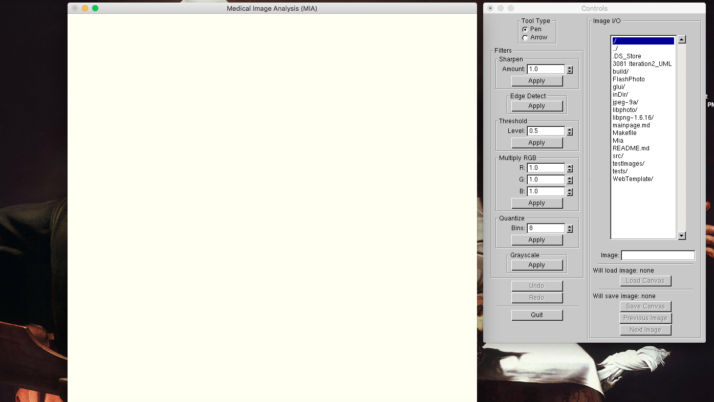
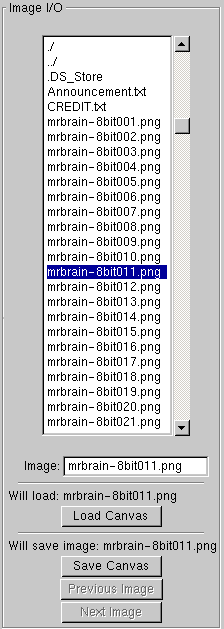
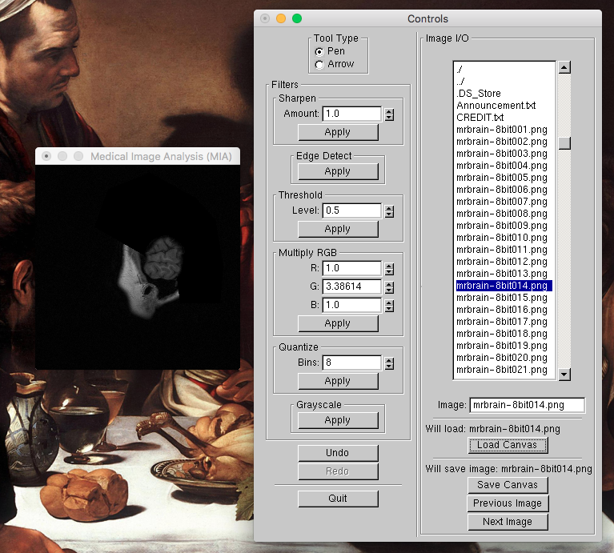

Mia (Medical Image Analysis) is a versatile application which does exactly what it says on the tin: analyze medical images. This tutorial will go over how to import images, analyze and annotate them, and then save the results.
Once you get a hang of Mia’s easy-to-use features, you’ll be the envy of radiologists everywhere. Don’t think mea culpa, think Mia!
When you start up Mia you should see two windows pop up: the canvas and the control panel. The canvas shows you the image you are currently working on, while the control panel dictates how you will change and affect the canvas.
 Mia’s control panel is split into two columns. The left column deals with modifying and editing your image, while the right handles loading, saving, and navigation from image to image. While you are free to use the starting canvas to familiarize yourself with the feature set, the strength of Mia only shows itself when an image is loaded.
First, navigate to your folder where the images you wish to work on are saved using Mia’s Image I/O file browser. Once you are in the right spot, double click the image you want to start with. The Load Canvas button will activate, and pressing it will replace the current canvas with your selected image.
Traversing images is even easier. Once an image is loaded, just press the Previous Image or Next Image buttons to move up and down your image deck. Note that this works so long as your image deck follows a similar numerical filename convention (shown in the example control panel to the right). Since most medical imaging systems default to this naming convention, moving between files shouln’t be an issue.
Once an image from a medical image deck is loaded, the canvas and control panel should look similar to what is shown above. Here a series of brain scan images have been queued.
The control panel’s left column primarily deals with actually performing operations on the image- hence the analysis in Medical Image Analysis. These features can be used in a variety of ways, a brief overview will be provided below:
The Pen tool allows you to draw on the canvas using a thin red brush. This is useful for circling or annotating sections of interest.
The Arrow tool stamps a target on to the canvas, which is useful for zeroing in on a fine feature.
The Sharpen filter makes the differences between colors more pronounced, which is useful for making small details pop. The amount field controls the extent of sharpening.
The Edge Detect filter highlights rapid changes in color. Regions of uniform color will be turned black. This may be useful for pinpointing hairline fractures and other thin, fine details.
The Threshold filter converts pixels beyond a certain threshold to either pure white or pure black. The effect accentuates the contrast between light and dark areas of an image. The larger the value set in the amount field, the more of the image that will be converted.
The Multiply RGB allows you to emphasize or deemphasize a color value across the image. If the values set for red (R), green (G), and blue (B) are all 1.0 then nothing will change. However, if a color component’s value is greater than 1.0 then the intensity of that color component will be increased. If a color component’s value is less than 1.0 then the intensity of that color component will be decreased.
The Quantize filter simplifies the number of colors component values used by your image to fit within the provided number of bins. The binned colors are evenly distributed across the RGB color spectrum. Each pixel is then adjusted to match its closest binned color.
The Grayscale converts your image to grayscale. this filter can often be used with Multiply RGB in order to color an image in such a way that resolving features becomes easier to the human eye. Humans find it easier to distinguish between different shades of green than shades of gray, so this kind of compositing can reveal hidden details.
The above image combines a number of the features listed previous in order to highlight a few features of interest on this brain scan.
If you make a mistake you can always revert a change using the Undo button, located right below the Grayscale button. Whenever something changes the canvas, you can undo the change by pressing Undo. Undone changes can be redone via the Redo Button. Once a new change is made to a canvas, any changes waiting to be redone will be lost.
Traversing to new images counts as a change to a new image, so pressing undo or redo can result in a new image being loaded. This will change the name of the file you are currently working with to match the one that is currently displayed at all times. This is important to consider when you save your image, as will be covered in the next section.
Saving is just as easy as loading, just be mindful of what file you are actually working with. The current image always reflects the displayed finename, but you can manually change the file name inside of the textbox. Doing so will prevent Mia from overwriting the orignal image.
once you are happy with your edited image, and have adjusted the filename as need be, you can save your image as either a PNG or JPEG (depending on your extension) using the Save Canvas button.